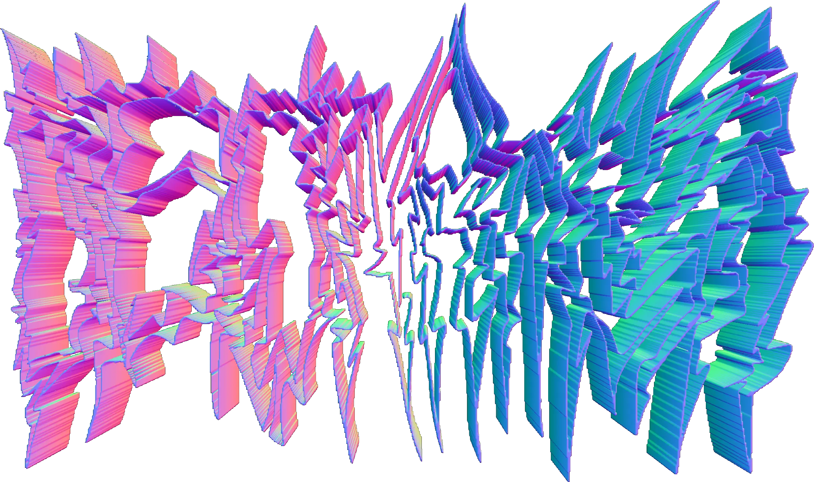

✟✯✞ZzAmpleR bElLak0✞✯✟
TEMPO:
120
▶ PLAY
■ STOP
🎛️
Master Effects
-
🔊 Master Volume:
80%
Reverb
Wet
Decay
Delay
Time
Feedback
Filter
Freq
Q
Distortion
Amount
Chorus
Wet
Phaser
Amount
Rate
RingMod
Freq
Dry/Wet
Pitch Shift
Pitch
AutoWah
Freq
Q
Depth
Tremolo
Depth
Rate
🎛️
Presets
Seleccionar:
Default (Borrar)
Roland TR-707
Perreke🍑🥵
Roland TR-808
Boombap
Load